[Window] WindowでExplorerのContext menuを修正する方法。
こんにちは。明月です。
我々が「Window」を使う間に「Context」メニューをカスタムマイズや編集ができれば「Window」運用中でもっと楽になるではないかと思ったことがあります。
その前に「Window」の「Context」メニューが何かと言うと「Window」の画面のバックグラウンドにマウスの右クリックすると出るメニューです。
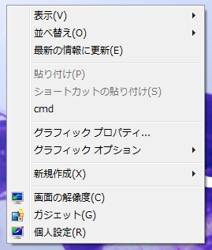
上のイメージのメニューが「Context」。メニューです。(ここで「Context」メニュを知らないなら説明が続けられないので、「Window」のバックグラウンドでマウス右クリックしてみて確認してください。)
そうするとこれから「Context」メニューに命令語を登録して編集してみます。
「Window」の環境設定は「regedit」というところに「Window」の全て設定があります。例えば、拡張名が「.xxx」の場合に何のプログラムを連携することや、「Window」が始動する時にバックグラウンドで実行するプログラム設定などの様々な設定があります。
(そのため「regedit」を間違って設定すると「Window」が可笑しくなる可能性があるので気をつけてください。)
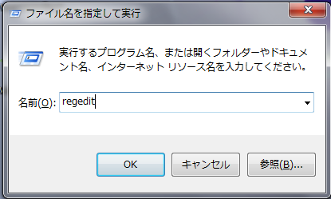
※「ファイル名を指定して実行」は「Window」マークボタン(左の下のAltキー隣)＋「R」キーを押下すると開けられます。
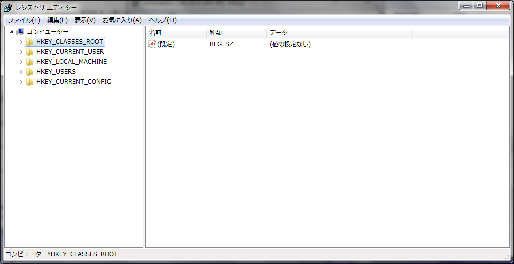
上のイメージが「Regedit」の「Window」です。「Regedit」の「Window」が開いたら様々な「Key」があると思いますが、我々はContextのMenuの設定だけ編集するなので「HKEY_CLASSES_ROOT」の群だけ確認します。
参考に「HKEY_CLASSES_ROOT」のキーは拡張子別で連携されるプログラムの環境設定です。「HKEY_CLASSES_ROOT」のキーを開くと様々なサブキーが見えると思います。そのキーの中で我々は「Directory」キーを編集するつもりです。
「Directory」キーは「Explorer」の「Directory」と関係があるキーです。ここで我々が「Context」-「Menu」を編集することができます。
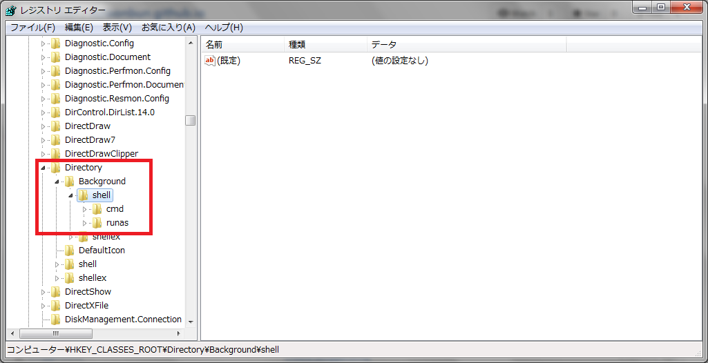
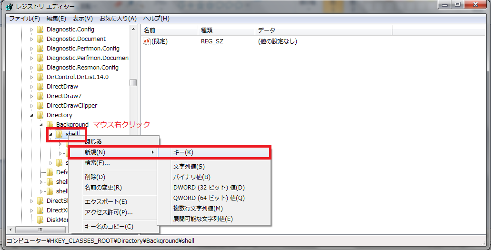
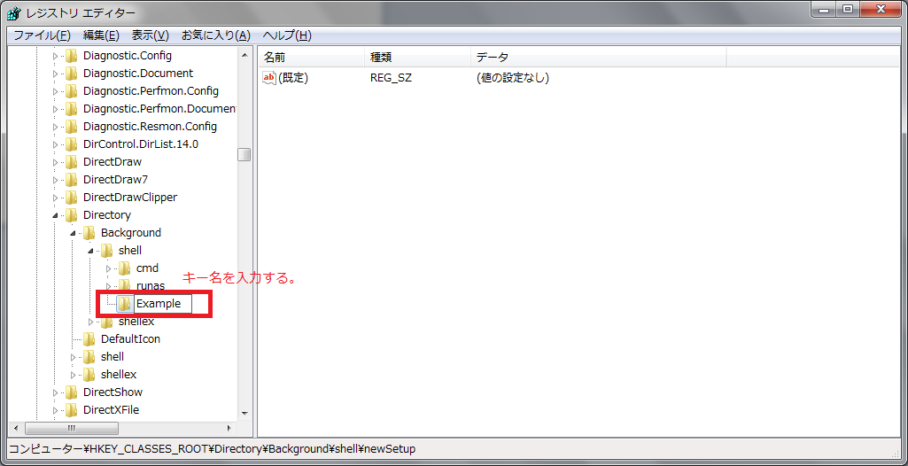
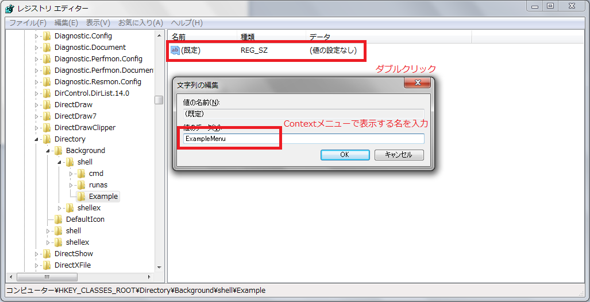
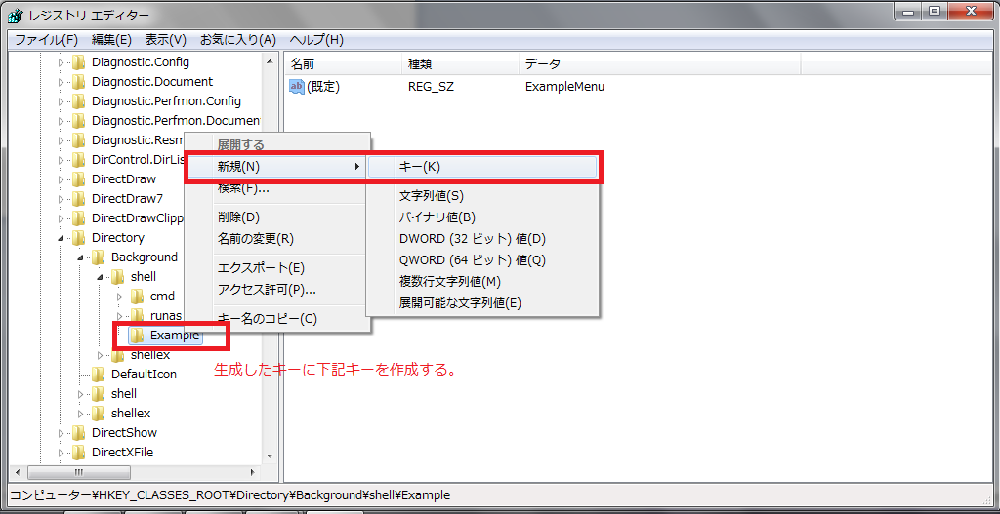
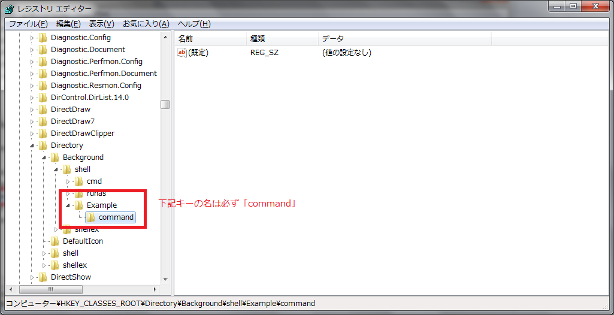
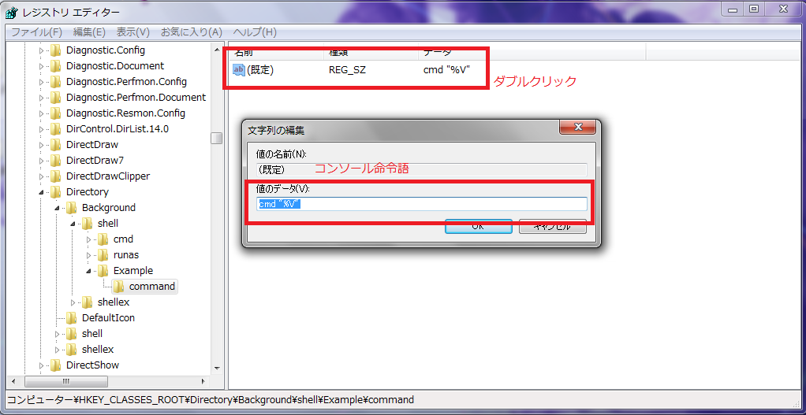
下記のイメージは「Context」メニューを編集した結果になります。
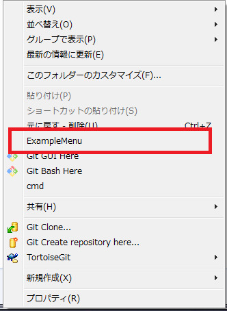
「ExampleMenu」のメニューをクリックすると我々が「command」キーに設定した命令語が実行させ、コマンドウィンドウが開けられます。
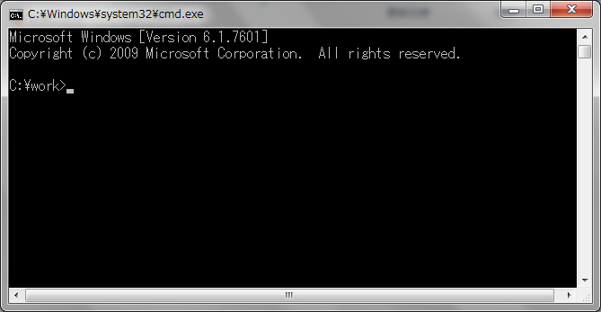
ここまで「Context」のメニューを編集することについて勉強しました。この「Context」メニュー編集の「Tip」は単純な情報になると思いますが、以外にJavaやC#のコンソールプログラムを連携すると「Window」を楽に運用ができます。 皆様もこのTipの利用してみましょう。
- [Window] MariaDBをインストールする方法2021/10/08 18:56:05
- [Window] WindowでFTPサーバを構築する方法2020/03/19 03:27:22
- [Window] Apacheをインストール方法、サービスに登録する方法。2019/10/18 07:36:51
- [Window] WindowでExplorerのContext menuを修正する方法。2019/07/01 01:42:41
- [C#] 58. ウィンドウフォーム(Window form)を作成する方法、そしてウィンドウメッセージとキュー2021/10/27 20:35:44
- [Design pattern] 2-3. ブリッジパターン(Bridge pattern)2021/10/27 20:32:21
- [Design patten] 2-2. コンポジットパターン(Composite pattern)2021/10/27 20:30:54
- [Design pattern] 2-1. アダプターパターン(Adapter pattern)2021/10/26 19:12:40
- [Project design] プログラム最終テスト - ST(System test(Standard, Scenario))2021/10/26 19:10:07
- [Project design] プログラム結合テスト - IT(Integration test)2021/10/25 20:12:17
- [Python] Seleniumライブラリを使う方法(自動ウェブテスト、ウェブスクレイピング)2021/10/25 19:29:00
- [Design pattern] 1-5. プロトタイプパターン(Prototype pattern)2021/10/22 19:35:45
- [Project design] プログラム検証とテスト - Unitテスト2021/10/22 19:34:09
- [C#] 57. コーティング規約2021/10/21 18:57:02
- [C#] 56. 値の初期化及び基本データ値(default)を設定する方法、そして原始データのnull処理、?と??の使い方2021/10/21 18:54:41
- [C#] 55.namespaceとusing、そしてpartialの使い方2021/10/21 18:51:39
- [C#] 54. Reflection機能を使い方 - Attribute2021/10/20 19:29:31
- [Project design] プログラム制作(コーディング) - クラス作成方法2021/10/20 19:28:09
- [C#] 53. Reflection機能を使い方 - Propertyとevent2021/10/19 21:02:58